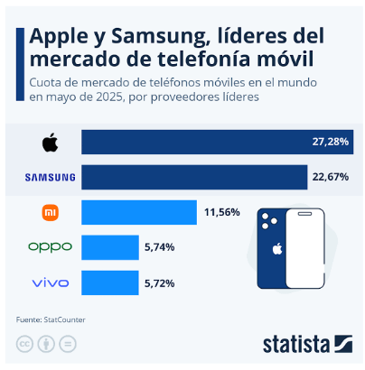

Seguridad, comercio y hegemonía tecnológica
Estados Unidos bloquea a Huawei
En mayo de 2019, durante el gobierno de Donald Trump, Estados Unidos tomó una decisión que cambió completamente el futuro de Huawei.

El Departamento de Comercio estadounidense incorporó a Huawei a una lista llamada Entity List (lista de entidades restringidas).
Esto afectó directamente a una de las relaciones comerciales más importantes de la compañía, su vínculo con Google.
Google controla dos pilares fundamentales para los teléfonos inteligentes:
- Android: Es el sistema base que hace funcionar al celular (como Windows en una computadora).
- Móviles de Google (GMS): Es el paquete de aplicaciones esenciales que vienen preinstaladas en casi todos los teléfonos, como Google Play Store (la tienda de apps), YouTube, Gmail, Google Maps y Google Drive.
Si bien Huawei perdió el acceso a las licencias y servicios comerciales de Google para los nuevos modelos de celulares, no perdió Android por completo, debido a que Android tiene una base de código abierto, que podía seguir utilizando.
Pero sin embargo, lo que si perdió fue el acceso comercial a los servicios de Google Mobile Services, entre ellos:
- Google Play Store.
- Gmail.
- Google Maps
- YouTube preinstalado.
- Servicios necesarios para que muchas aplicaciones funcionaran correctamente.
Los modelos que ya estaban comercializados antes de las restricciones pudieron conservar sus servicios de Google, pero los nuevos modelos internacionales quedaron afectados.
Aunque Huawei desarrolló su propia tienda de aplicaciones, AppGallery, y comenzó a desarrollar alternativas, el daño comercial fue enorme.
| Aspecto | Antes de las restricciones | Después de las restricciones |
|---|---|---|
| Servicios móviles | Acceso a GMS en los teléfonos compatibles. | Los nuevos modelos afectados no incorporaron GMS; se impulsaron servicios propios. |
| Sistema operativo | Android con servicios y aplicaciones de Google en mercados compatibles. | Acceso a AOSP, sin que eso incluyera GMS; desarrollo de HarmonyOS. |
| Aplicaciones | Distribución habitual mediante Google Play. | Expansión de AppGallery y otros canales propios. |
| Componentes | Acceso a una cadena internacional de proveedores. | Restricciones a ciertos chips y esfuerzos para desarrollar alternativas. |
La disponibilidad concreta depende del modelo, el mercado y el momento. Esta tabla resume tendencias, no especificaciones de cada dispositivo.
Bloqueos Estratégicos
Estados Unidos no necesitó prohibir que Huawei vendiera celulares en todo el mundo.
Al controlar tecnologías fundamentales de la cadena de suministro como MicroChip y componentes físicos, Software, Maquinaria y Arquitectura Base y programas de diseño de chips, pudo perjudicar su capacidad de competir internacionalmente.
Además, en 2020 endureció las restricciones para impedir que Huawei pudiera acceder a determinados semiconductores fabricados en el extranjero mediante tecnología estadounidense.
Esto afectó especialmente a sus procesadores Kirin, que eran una de las características más importantes de sus teléfonos de alta gama.
En otras palabras, Estados Unidos estaba atacando dos pilares fundamentales de Huawei.
El avance de Huawei con las restricciones
A pesar de las restricciones, Huawei no desapareció.
La compañía tomó varias decisiones como:
- Desarrolló su propio ecosistema de aplicaciones y servicios.
- Impulsó HarmonyOS, su propio sistema operativo.
- Invirtió en el desarrollo de procesadores y semiconductores chinos.
- Fortaleció su negocio en China y otros mercados.
- Continuó desarrollando infraestructura 5G.
En 2023 sorprendió al mercado con el lanzamiento del Mate 60 Pro, un teléfono que utilizaba un procesador avanzado fabricado en China, pese a las restricciones estadounidenses.
Esto demostró que China estaba consiguiendo desarrollar alternativas tecnológicas propias.
Pero Huawei tuvo que pagar un precio enorme, donde perdió presencia en mercados internacionales y sufrió una caída importante en su negocio de celulares fuera de China.
